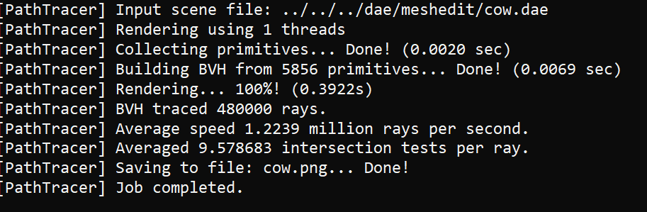

CS184/284A Spring 2025 Homework 3 Write-Up
Names: Grant Zhao
Link to webpage:
https://cal-cs184-student.github.io/hw-webpages-grantz/
Link to GitHub repository:
https://github.com/cal-cs184-student/hw-webpages-grantz
Overview
This homework focuses on path tracing to render images through the usage of ray generation, scene intersection, BVH, direct and global illumination as well as adaptive sampling
to increase the optimization of rendering images.
Part 1: Ray Generation and Scene Intersection
For ray generation, we take the normalized image coordinates and convert it to
camera space by using translations and scaling to match the image coordinate to
camera space. This is done by using the bottom left corner as (-tan(0.5*hfov), -tan(0.5*vfov), -1)
and top right corner as (tan(0.5*hfov), tan(0.5*vfov), -1). We take these coordinates and find the
distance of the height and width and multiply by the image x-coord or y-coord and shift it by the
camera corners.This method translates the image space to camera space. After this, we convert to world
space by multiplying by the c2w matrix and then normalize this. From there, we generate the world space ray
starting from the camera position in the world space (pos) and give it the direction of the world
space ray we created. Then we set the clipping planes with nclip and fclip of this ray. For the primitive
intersection, we did it for spheres and triangles. For triangles, we used the Moller-Trumbore algorithm from
lecture to get "t" and the barycentric coordinates and made sure "t" was within the clipping planes and
triangle. This is done by defining two edges, e1 and e2 of the triangle pointing from one vertex p1. And define "s"
as a ray from the origin to one of the vertices of the triangle or in this case p1. We then calculate
the determinant using cross products such as DxE2 and SxE1.
In the end, once we calculated E1,E2,S,S1,S2, we can apply the vector equation from lecture to get t,b1,b2.
Using the two barycentric coordinates, we can easily find the third by 1-b1-b2. Using these values, we can
find the intersection point and update our interesection data which is b0*p0 + b1*p1 + b2*p2. For spheres, we used the formula from lecture
using the quadratic formula to get the interesection times. This is done where a= d*d, b = 2(o-c)*d, and
c = (o-c)*(o-c)-r^2. We check the descriminant of the quadratic formula for valid "t"s. We only use the
time that is the smallest as we want the time that it first intersects. Below are the images with normal
shading for a few small .dae files.
|
banana
|
 spheres
spheres
|
|
empty
|
Part 2: Bounding Volume Hierarchy
For my BVH construction algorithm, we use a recursive algorithm
to where our base case is if the number of primitives in our bounding
box is less than or equal to the max leaf size, we return the leaf with
those primitives. Else, we split the primitives into two sets
by finding our split axis in which I chose the longest axis as this allows
for the primitives to be more evenly spaced. We then sort the primitives into
a left and right node where the centroid position in that axis is less than the
midpoint of that axis, we put it into the left node, and if it is
greater than the midpoint, we put it into the right node.
And then we recurse on these nodes to create a BVH tree. For the edge case where
one node is empty, we arbitrarily put half of the primitives in the left and the
other half in the right node so we do not have any infinite recursion. In the end we return the root node
of our BVH tree! Below we have the normal shading for a few large .dae files that can only render with BVH acceleration.
|
cow
|
 beast
beast
|
|
CBlucy
|
maxplanck
|
For rendering time on a few scenes, below are the screenshots comaparing the
rendering time of teapot, cow, and banana with BVH and no BVH.
|
cow without BVH
|

cow with BVH
|
|
banana without BVH
|
banana with BVH
|
|
teapot without BVH
|
teapot with BVH
|
From these images, we can definitely see and feel the improvement in runtime with BVH as it improves the runtime logarithmicly as we can traverse a tree in log time.
This is seen from the rendering time without BVH: cow: 51.0791 sec, banana: 20.9664 sec, teapot: 14.1695 sec. And with BVH: cow: 0.3922 sec, banana: 0.2195 sec, teapot: 0.2842 sec. A huge difference and we save a lot of time!
Another thing to note is that our BVH also cuts the number of intersection tests. Without BVH, the cow file needed an average of 989 intersection tests per ray. And with BVH, it drops to only 9.57 intersection tests per ray. Almost a 100x difference!
Thus, BVH is proven to be a significant method in cutting rendering time and intersection tests bringing in a huge optimization for rendering images.
Part 3: Direct Illumination
For uniform hemisphere sampling, we randomly sampled outgoing directions in the hemisphere by using the
given hemisphereSampler->get_sample() method to generate num_samples directions and transformed them to world space by multiplying
by o2w matrix to give us w_in.
For each outgoing direction, we create a shadow ray from the hit_p with the direction being the
world space sampled direction, w_in that we just calculated. For each ray we create, we set min_t to EPS_F, to alleviate numerical precision issues and intersecting the surface
it started from. Then we use bvh->intersect to check if the shadow ray intersects a light source.
If it does intersect wtih a light source, we comput the emission using insect.bsdf->get_emission(). We also get
the BSDF function f(w_out, w_in) and the consine of the angle which is just the z-direction of w_in. We multiply these values
using the reflectance equation, and add (isect_emission * cos_theta * bsdf) to our total sum of lighting L_out.
After going through each sample, we multiply L_out by 2*pi because the pdf of uniformly sampling
across a hemisphere is 1/ (2*pi) and divide all of it by the number of samples to get the average reflectance.
For importance sampling, we sample through every light in the scene instead.
For each light scene, we only sample once if its a point light source and
ns_area_light times otherwise as all samples from a point light will be the same. For each sample,
we use sample_L(hit_p, &wi, &distToLight, &pdf)
to sample the light. This returns the emitted radiance, writes a world space unit wi vector, a disttolight giving distance between
p and the light source, and pdf evaluated at the wi direction. We transform the wi world space vector to object space using the w2o vector to get w_in.
Then we create a shadow ray with
hit_p and w_i as our direction, setting the min_t and max_t values to EPS_F and distToLight - EPS_F to avoid interecting with the light itself.
We check if there aren't any other objects between
hit_p and the light source sample by using the bvh->intersect. If there are no intersections, we get
the BSDF function f(w_out, w_in) and add it L_out by using the equation (sample_light * cos_theta * bsdf) / pdf. Once done,
we average our relection illuminance by the number of samples we used. Below are some images rendered with both implementations.
 Bunny with hemisphere sampling
Bunny with hemisphere sampling
|
Bunny with importance sampling
|
 Spheres with hemisphere sampling
Spheres with hemisphere sampling
|
Spheres with importance sampling
|
For the Bunny scene, we generated each image with different numbers of light rays using light sampling. As we increase
the number of light rays, we can see a lower noisy image as the blurry image gets more smoothed out. This can definitely be seen from the image
with 1 light ray and 64 light rays as we get a grainy image compared a more smoothed out one and get a better shadow of the bunny.
Comparing the results between uniform hemisphere sampling and lighting sampling, lighting sampling generally created a more smoother and less grainy image and better shadows
for the objects inside the scene. Definitely less noisy in particular compared to hemsiphere sampling. This is mostly due to hemisphere sampling from the hemisphere rather than directly from the light source. Sampling from
light sources directly will find each point that hits it or obstructed leading to less noise in rendering and less variance compared to hemisphere.
|
Bunny with 1 light ray and 1 sample per pixel
|
Bunny with 4 light ray and 1 sample per pixel
|
|
Spheres with 16 light ray and 1 sample per pixel
|
Spheres with 64 light ray and 1 sample per pixel
|
Part 4: Global Illumination
For at_least_one_bounce_radiance, we first call one_bounce_radiance and add it to L_out
to simulate at least one bounce. This function is only called if max depth is greater than zero.
Then, we check if the depth of our ray has not met the max depth, if not we go through recursion to continue calling
one_bounce_radiance until we have reached the max depth. Before calling our recursive call, we create a new ray with a depth -1 so
we can keep track of when to stop bouncing. For this ray, we sample an incident light direction based on the intersection to get the pdf, and reflectance.
We then change the reflectance to world space using o2w matrix and set this as our direction for our new ray starting from hit_p. If this Ray
does not intersect with the bvh of the scene, we stop. Else, we recursively call the at_least_one_bounce function to simulate multiple bounces and use the
reflectance equation to add to L_out which is (l * f * cos_theta) / pdf. Once the recursion is done, we return the summation of the direct and indirect lighting.
For russian roulette, we modified the code to where we simulate a coin flip of 70% hitting heads and only continue recursing if we do hit heads, else we end the recursion early.
A little change is dividing the reflectance equation by the probability for each indirect lighting bounce. Below are some images rendered with global illumination with 1024 samples per pixel.
|
Global illumination for spheres
|
Global illumination for bunny
|
Below are images of spheres with direct illumination and only indirect illumination using 1024 samples per pixel.
For the image with only direct illumination, this simulates only the first bounce of light so we can see that the ceiling
is pitch black as no light is reflected back to the ceiling and overall is less colorful as the colors of the left and right wall are no reflected.
For the indirect illumination, we can see it is darker as light being bounced gets less illumination but this allows for a more colorful image as colors from the walls
get to be bounces to other surfaces and we can see the ceiling now due to light bouncing back up. The bunny also has a smaller shadow due to light bouncing towards where the shadow was
in the direct illumination image.
|
Spheres with only direct illumination
|
Spheres with only indirect illumination
|
For the second and third bounce of light, in the isAccumBounces = true, we can see that the image definitely gets brighter and more colorful as well
as a tinge of color slowly closing into the shadow of the bunny. Compared to when isAccumBounces = false, the image gets dimmer with each bounce as the last bounce
usually has less illumination than the previous which leads to less brightness. However, this in turn makes accumulation more brighter but over time, this increase will slowly smooth out
as adding extra bounces won't increase the brightness to make a significant difference. Rasterization does not have methods of capturing light and their bounces to simulate what a real world
light would do making images lack reality.
|
Bunny 0 bounce and isAccumBounce=true
|
Bunny 0 bounce and isAccumBounce=false
|
|
Bunny 1 bounce and isAccumBounce=true
|
Bunny 1 bounce and isAccumBounce=false
|
|
Bunny 2 bounce and isAccumBounce=true
|
Bunny 2 bounce and isAccumBounce=false
|
|
Bunny 3 bounce and isAccumBounce=true
|
Bunny 3 bounce and isAccumBounce=false
|
|
Bunny 4 bounce and isAccumBounce=true
|
Bunny 4 bounce and isAccumBounce=false
|
|
Bunny 5 bounce and isAccumBounce=true
|
Bunny 5 bounce and isAccumBounce=false
|
Below are images with russian roulette rendering at difference depths and using 1024 samples per pixel.
|
Bunny Russian Roulette with 0 bounce
|
Bunny Russian Roulette with 1 bounce
|
|
Bunny Russian Roulette with 2 bounce
|
Bunny Russian Roulette with 3 bounce
|
|
Bunny Russian Roulette with 4 bounce
|
Bunny Russian Roulette with 100 bounce
|
For the bunny image, low sample per pixel rates have the image very noisy and grainy but this decreases
as we increase the number of samples per pixel as we can see from the 1024 samples per pixel looking very smooth and no rough surfaces.
As we increase the sample, the shadows, light reflecting, and colors become much smoother as well giving us an accurate rendering of our image.
|
Bunny with 1 sample per pixel rate & 4 light rays
|
Bunny with 2 sample per pixel rate & 4 light rays
|
|
Bunny with 4 sample per pixel rate & 4 light rays
|
Bunny with 8 sample per pixel rate & 4 light rays
|
|
Bunny with 16 sample per pixel rate & 4 light rays
|
Bunny with 64 sample per pixel rate & 4 light rays
|
|
Bunny with 1024 sample per pixel rate & 4 light rays
|
Part 5: Adaptive Sampling
For adaptive sampling I follow the spec by testing I = 1.96 * mu / sqrt(samples) for every samples per batch in raytrace_pixel
where I calculate the illuminance of the radiance to get s1 and s2. And plug it into the mu and variance equation in the spec. We test if
I is less than or equal to maxtolerance * mu and if so, we stop tracing more rays for the pixel. We update samplecountbuffer to be the number of samples
before we converged instead of all of the samples we were supposed to run. Below we have the images of both the render and sample rate for a few images.
|
Bunny Sampling Rate
|
Bunny Render
|
|
Spheres Sampling Rate
|
Spheres Render
|
|
Dragon Sampling Rate
|
Dragon Render
|